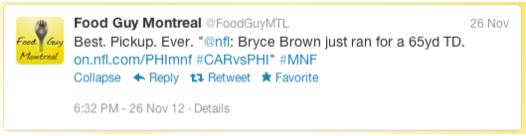
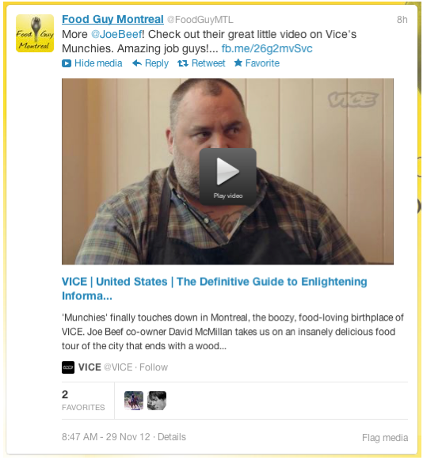

Twitter player cards enable you to embed your video content directly in Twitter sites and mobile applications.
After you set up Twitter card integration, whenever anyone tweets a link to a page on your site with embedded video, that video will be directly embedded and playable within the Twitter feed.
The following example is from the Twitter web site; it shows a tweet without an embedded video.
The image below shows a tweet with an embedded video, running via the Ooyala Player:
The embedded player is hosted in the Ooyala Internet domain (ooyala.com), but can display your branding based on the Player ID. If you want to view Twitter Card analytics, in Backlot open the Domain report and look for the player.ooyala.com domain.
For a basic embedded video in Tweets (as detailed in Creating an Ooyala Player Twitter Card), you must do the following: